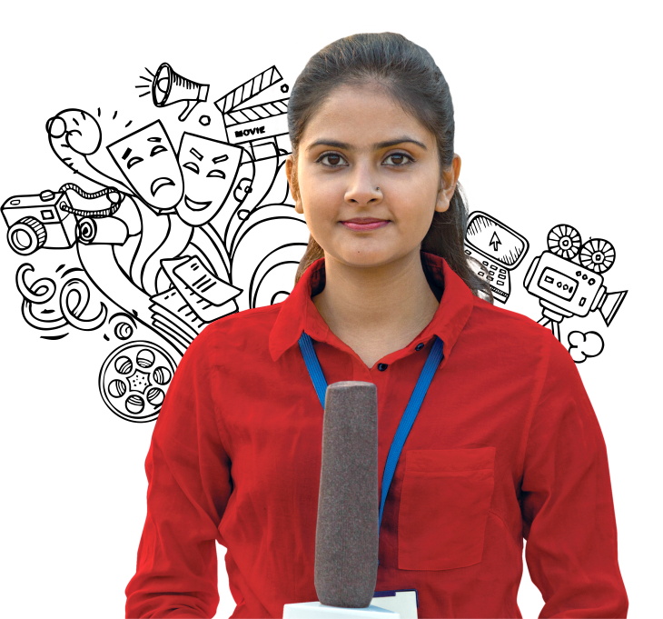

Full-time | Three-yearOn-campus | Undergraduate Program
Prepare a strong foundation in the media industry with a creative program that includes media software training in Adobe, Corel, etc. along with a media studio for practical learning.
Full-time | Three-yearOn-campus | Honours Program
Develop broad-based teaching competency with a holistic program that readies you for multiple roles in the education sector, and get paid internships as you learn.
Full-time | Two-yearOn-campus | Undergraduate Program
Develop broad-based teaching competency with a holistic program that readies you for multiple roles in the education sector, and get paid internships as you learn.
Full-time | On-campusDoctoral Program
Delve deeper into the sphere of education and help uncover better ways to teach and learn with your research. The PhD degree is awarded to a scholar based on extensive and original research done in his/her chosen field.
Full-time | Two-yearOn-campus | Postgraduate Program
Get a broad spectrum understanding of philosophy, sociology, psychology in education and take on specialised and supervisory roles in educational management. * Admissions for MEd Programs are on hold currently.
